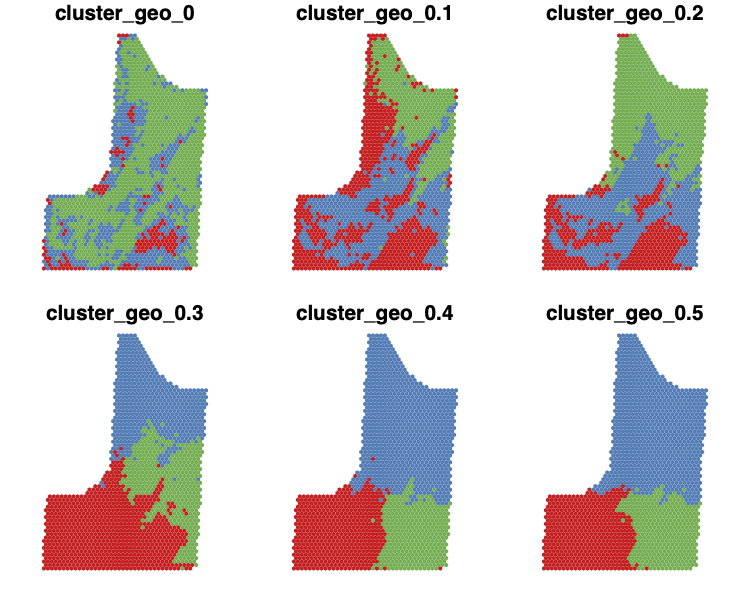
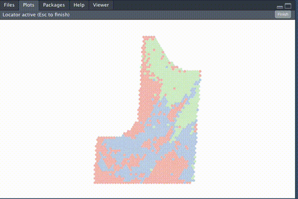

plotdesignr: Design Agronomic Field Experiments with more Power
Overview of package functionality
Sarah Mueller
Last updated: December 06, 2020
plotdesignr is a package currently under development that provides a novel way to design agronomic field experiments with a focus on maximizing statistical power. Field research is time consuming, resource intensive, and can only be done once per year in many growing regions. Because of these constraints, it is important that every experiment is designed in a way that gives it the greatest chance of producing meaningful results.
Challenge
In large field experiments, spatial variability can cause “noisy” data. This underlying spatial variability, combined with small differences among treatments, creates an opportunity for low-powered experiments that are unlikely to detect significant treatment effects, even if they are present.
Solution
Using historical yield data, clustering is used to detect homogeneous areas of the field in which each block of an experiment can be placed. See the conceptual introduction tab for more details.
Current Functionality
The following is a brief example of the plotdesignr workflow and functionality. More detailed documentation and examples will be provided in the future in a separate document.
1. Load multiple years of yield data and prepare for clustering
Three years of corn yield data for a field in 2014, 2016, and 2018 are loaded. The point yield observations are aggregated into a common grid of hexagonal polygons to enable comparison across years.
input_config <- read_yaml('./example_workflow_config.yml')
cluster_df <- make_cluster_data(config = input_config, plot = TRUE)
2. Choose clustering parameters based on several criteria
The three years of yield data are clustered using both the yield values and the distance between yield polygons with help from the ClustGeo package. The combined weighting of yield similarity and geographic continuity allows for creating clusters large enough to fit a block of the experiment inside.
explore_best_mix(processed_data = cluster_df, cluster_number = 3, range = seq(0, 0.5, 0.1), plot = TRUE, output_path = input_config$output_path)
For this example, three clusters and a mixing parameter of 0.1 is selected (criteria for choosing cluster number not shown). Several criteria, as well as knowledge about the field, must be considered to create meaningful clusters.
# finalize cluster number and mixing parameter choice
clustered <- finalize_clusters(processed_data = cluster_df, cluster_number = 3, mixing_parameter = 0.1)3. Design new experiments
One of the most powerful features of plotdesignr is the ability to interactively create and simulate various experimental designs. Once the clusters have been chosen, simply click on the map to design new experiments. The goal it to place experiment blocks inside of areas of the same cluster because those areas represent homogeneous yield environments. See the conceptual introduction tab for more details.

Experiments may either have disconnected blocks (shown here with three clusters and two different choices of “mixing parameter”) or they may be “traditional” experiments with connected blocks in various arrangements.


Right: disconnected_01, three clusters with mixing parameter of 0.1. Left: disconnected_04, three clusters with mixing parameter of 0.4
Right: traditional_square, traditional experiment with blocks in a 2x2 arrangement. Left: traditional_long, traditional experiment with blocks in a 4x1 arrangement.
4. Test power of experimental designs
The alternative designs are evaluated for statistical power at various effect sizes using the historical yield data and the simr package. The results below show that, on average, the design disconnected_01 has greater statistical power for the same effect size while disconnected_04 and traditional_square have the lowest power. This is made most clear in 2014 and 2018. The interpretation is that for the same level of effect size between treatments, statistical tests are more likely to detect significant differences, when they are present, using the design disconnected_01 compared to traditional_square.

Future work
This demonstration highlights the influence of experimental design on statistical power in field experiments and provides a framework for identifying and testing potential designs. Future work will be focused on improving recommendations for best practices in:
- How to choose cluster number
- How to choose mixing parameter
- Whether cluster data should only include the target crop
- Cleaning underlying input data
plotdesignr is still in development and is available on GitHub.